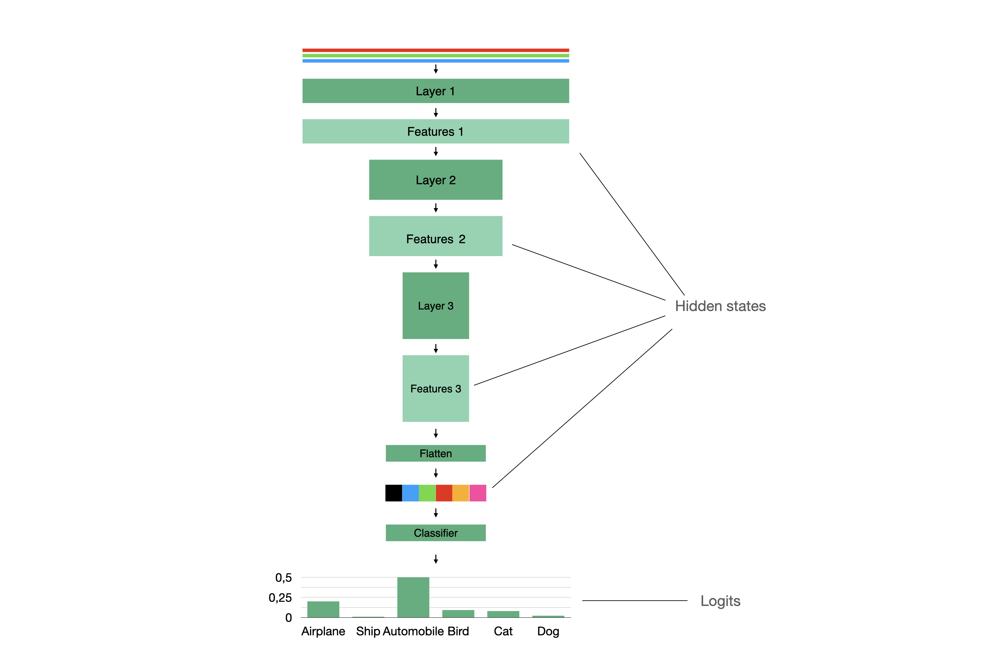

Models¶
-
class
compressors.models.base_distil_model.BaseDistilModel¶ Base model for running knoweledge distillation
-
forward(output_hidden_states: bool = False, return_dict: bool = False, *args, **kwargs) → Union[Tuple, Mapping]¶ Forward method for model.
- Parameters
output_hidden_states (bool, optional) – If true adds hidden states to output. Defaults to False.
return_dict (bool, optional) – If true returns dict else tuple. Defaults to False.
- Returns
Model outputs.
- Return type
Union[Tuple, Mapping]
-